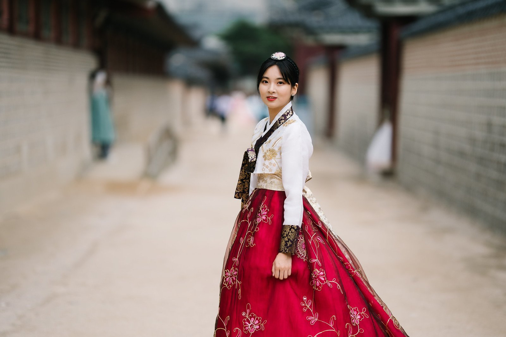
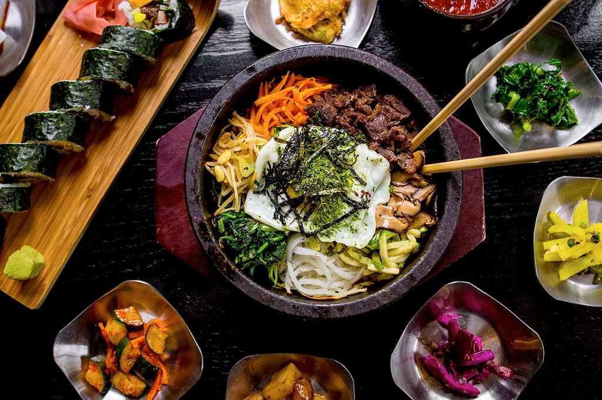
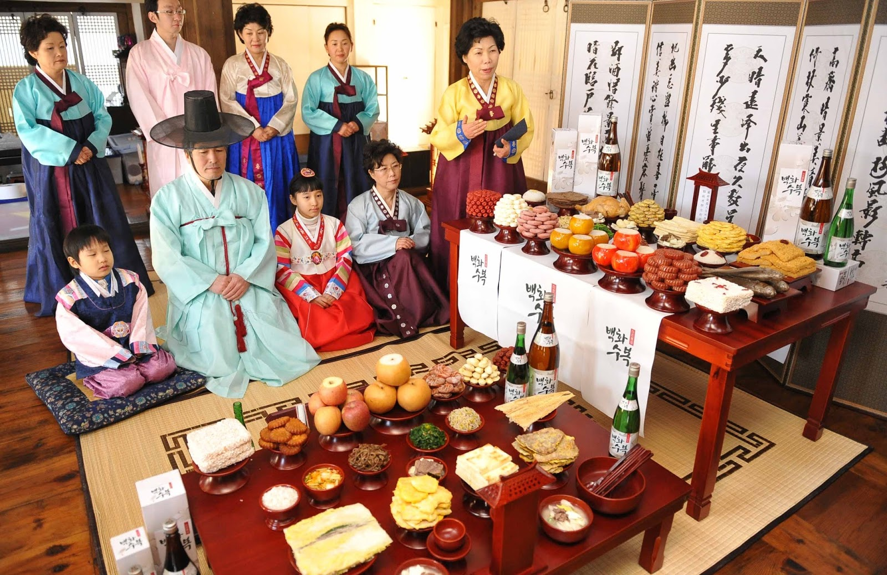

Explore the rich culture of Korea.
K-Dramas
Korean dramas differ from a lot of Western TV content, as they are typically only made to last for one season, with one overarching plot lasting 12 to 16 or so episodes. Historical stories and sitcoms may last longer, even up to 200 episodes, but the majority of prime-time television is set up this way. The dramas range on a variety of topics, from history and action to school and work life.
Clothing
The traditional outfit in Korea is called 한복 (hanbok). It consists of a long-sleeved shirt and a long wide hemmed skirt. The specific styles and colors of each 한복 differ. Even today, it is normal for 한복s to be worn during the big holidays of 설날 and 추석. In addition to which they’re often also worn at weddings by the bride and groom’s parents, as well as the bride and groom at some point after the ceremony. Or even during the ceremony if it’s held in a traditional Korean style. It can also be worn on special events in the family, in the company, or on business events.
Cuisine
At the very center of Korean cuisine is rice. Korea has a long history of being nearly exclusively an agricultural country, with this having changed only recently, and you can still clearly see this in today’s cuisine. Fish and other seafood also play an integral part in shaping Korean cuisine.Besides them, fermented dishes are largely important, kimchi being the most famous of them, rich in nutrients. The most common ingredients to use for cooking are 된장 (doenjang) which is a fermented bean paste, ginger, chili powder, fermented hot pepper paste, garlic, salt, sesame oil, and soy sauce.In general, Koreans eat a lot of rice, vegetables, and meats. It’s typical for each meal to consist of multiple different side dishes, called 반찬 (banchan), in addition to the main course. Of them, kimchi is the staple side dish present at every meal.
Holidays
South Korea shares many holidays with the rest of the world but also has some holidays unique to its culture. The most popular holidays are 추석 (Chuseok | Korean Thanksgiving) and 선랄 (Seollal | Korean Lunar New Year). During these two holidays, many Koreans return to their hometowns to visit their families.